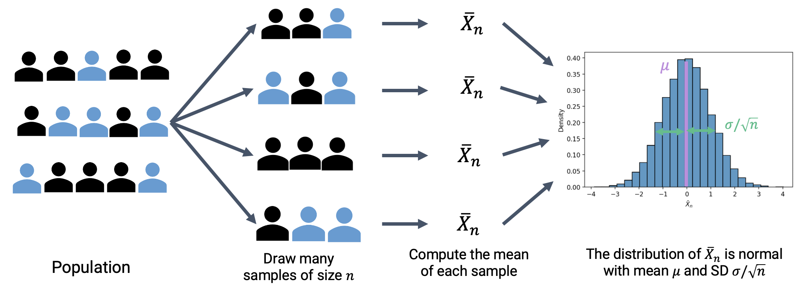
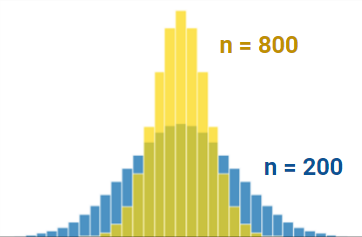

Define a random variable in terms of its distribution
Compute the expectation and variance of a random variable
Gain familiarity with the Bernoulli and binomial random variables
In the past few lectures, we’ve examined the role of complexity in influencing model performance. We’ve considered model complexity in the context of a tradeoff between two competing factors: model variance and training error.
Thus far, our analysis has been mostly qualitative. We’ve acknowledged that our choice of model complexity needs to strike a balance between model variance and training error, but we haven’t yet discussed why exactly this tradeoff exists.
To better understand the origin of this tradeoff, we will need to introduce the language of random variables. The next two lectures of probability will be a brief digression from our work on modeling so we can build up the concepts needed to understand this so-called bias-variance tradeoff. Our roadmap for the next few lectures will be:
Random variables: introduce random variables, considering the concepts of expectation, variance, and covariance
Bias, Variance, and Inference: re-express the ideas of model variance and training error in terms of random variables and use this new perspective to investigate our choice of model complexity
Let’s get to it.
Random Variables
Definition
Suppose we generate a set of random data, for example, toss a coin, or collect a random sample from some population. A random variable is a numerical function of the randomness in the data.
Example 1: Tossing a fair coin
We are tossing a fair coin. A fair coin can land either heads (\(H\)) or tails (\(T\)), each with probability 0.5. If we toss the coin once, there are two possible outcomes: \(H\) or \(T\). With these possible outcomes, a random variable \(X\) can be defined as follows:
The random variable \(X\) is random due to the randomness of the sample; it is a variable because its exact value depends on how this random sample came out—in this case if the coin lands heads or tails. It is a function because it takes the outcome (\(H\) or \(T\)) and outputs \(0\) or \(1\).
Another example can come from drawing random samples.
Example 2: Sampling Data 100 Students
We want to study Data 100 students through sampling. To do this, we draw a random sample \(s\) of size 3 from all students enrolled in Data 100. We might then define the random variable \(Y\) to be the number of Data Science majors in this sample.
\(Y\) is random because the sample we draw is random. Similar to \(X\), \(Y\) is also a function. Its input/domain is the set of all possible subset of 3 students that we can draw, and its output/range is the set of numbers of data science majors we can draw from this population, from \(0\) to \(3\) (if we have at least three data science majors in the class).
In both of the above examples, \(X\) and \(Y\) are functions. We typically denote random variables with uppercase letters, such as \(X\) or \(Y\).
Distribution
For any random variable, we need to be able to specify two things:
Possible values: This is the set of values the random variable can take on (i.e. the range/output of the function). In Example 1, the possible values of \(X\) is the set \(\{0, 1\}\).
Probabilities: This is the set of probabilities describing how the total probability of 100% is split over all the possible values. In Example 1, the corresponding probabilities for possible values \(0\) and \(1\) are both \(\frac{1}{2}\).
We often specify these two things using a probability distribution table. For Example 1, the probability distribution table of \(X\) is on the right.
Specifying these two things is specifying the distribution of a random variable.
\(x\)
\(P(X = x)\)
0
\(\frac{1}{2}\)
1
\(\frac{1}{2}\)
The distribution of a random variable \(X\) is a description of how the total probability of 100% is split over all the possible values of \(X\).
A distribution fully defines a random variable.
For a discrete random variable\(Y\) with a finite number of possible values, we define its distribution by stating the probability of \(Y\) taking on some specific value, \(y\), for all possible values of \(Y\).
The left DataFrame displays all possible samples we could collect in Example 2 and the corresponding values for our random variable \(Y\). The right DataFrames displays the probability distribution table of \(Y\).
The distribution of a discrete variable can also be represented using a histogram, shown below. If a variable is continuous – it can take on infinitely many values – we can illustrate its distribution using a density curve.
Named Distributions
Apart from probability distribution tables, histograms, and density curves, we can also specify the distribution of a random variable using their names, since they are used very often. Usually they also have parameters, which are constants associated with the distribution. They define a random variable’s shape and possible values.
Bernoulli(\(p\)): This is the distribution of a binary random variable that takes on value \(1\) with some probability \(p\), and value \(0\) with probability \(1-p\). Bernoulli random variables are often referred to as “indicator variables”. The random variable \(X\) we defined in Example 1 follows the Bernoulli distribution with \(p=0.5\).
Binomial(\(n\), \(p\)): If we take the sum of \(n\) independent Bernoulli random variables with probability \(p\), we get a Binomial random variable with parameters \(n\) and \(p\). In the context of Example, 1, if we toss the fair coin \(n\) times and record the total number of times the coin lands heads, the result will be Binomial(\(n\), \(0.5\)).
Uniform on a finite set of possible values: This is the distribution that makes all elements of the set of possible values equally likely. For example, if we roll a standard 6-sided die, the result of the roll will be Uniform on the set of numbers \(\{1, 2, \dots, 6\}\).
Uniform on an infinite set of possible values: This is the distribution of a continuous random variables that have equal density on all of its possible values. The Uniform random variable on the unit interval \((0, 1)\) is a special one—its density curve is flat on \((0, 1)\) and \(0\) elsewhere.
Normal(\(\mu, \sigma^2\)): This is probably the most well-known probability distribution, also known as the Gaussian distribution. Normal random variables are continuous, so they have density curves. The parameters \(\mu\) and \(\sigma^2\) specify the center (i.e. mean) and spread (i.e. variance) of the density curve. You’ve seen Normal random variables arise from the Central Limit Theorem in Data 8. We will also explore this very soon.
Expectation and Variance
Often, it is easier to describe a random variable using some numerical summary, rather than fully specifying its distribution. These numerical summaries are constant numbers that characterize some properties of the random variable. Because they give a “summary” of how the variable tends to behave, they are not random – think of them as a static number that describes a certain property of the random variable. In Data 100, we will focus our attention on the expectation and variance of a random variable.
Expectation
The expectation of a random variable \(X\) is the weighted average of the possible values of \(X\), where the weights are the probabilities of \(X\) taking on each possible value. To compute the expectation, we find each possible value \(x\), weight it by the probability of \(X\) taking on the value, and sum across all possible values \(x\):
\[E[X] = \sum_{\text{all possible } x} x P(X=x).\]
The expectation is used as a measure of the “mean”, or “center of gravity”, of a random variable.
Variance
The variance of a random variable is a measure of how far it can deviate from its expectation. It is defined as the expected squared deviation from the expectation of \(X\). Put more simply, variance asks: how far does \(X\) typically vary from its average value? What is the spread of \(X\)’s distribution?
\[\text{Var}(X) = E[(X-E[X])^2]\]
If we expand the square and use properties of expectation, we can re-express this statement as the computational formula for variance. This form is often more convenient to use when computing the variance of a variable by hand.
\[\text{Var}(X) = E[X^2] - (E[X])^2\]
How do we compute the expectation of \(X^2\)? Any function of a random variable is also a random variable – that means that by squaring \(X\), we’ve created a new random variable. To compute \(E[X^2]\), we can simply apply our definition of expectation to the random variable \(X^2\):
\[E[X^2] = \sum_{\text{all possible } x} x^2 P(X = x).\]
The variance is used as a measure of “spread” of a random variable.
Standard Deviation
Notice that the units of variance are the square of the units of \(X\). For example, if the random variable \(X\) was measured in meters, its variance would be measured in meters\(^2\). The standard deviation of a random variable converts things back to the correct scale by taking the square root of variance:
\[\text{SD}(X) = \sqrt{\text{Var}(X)}.\]
Sums of Random Variables
It is common to work with multiple random variables at the same time, therefore, we are often interested in how sums of random variables behave.
Equality
Before looking at sums of random variables, let’s first look at different kinds of equalities between random variables.For any two random variables \(X\) and \(Y\),
\(X\) and \(Y\) are equal if \(X(s) = Y(s)\) for every sample \(s\). Regardless of the exact sample drawn, \(X\) is always equal to \(Y\). In other words, if \(X = 1\), then \(Y\) must also be \(1\). We write this as \(X = Y\).
\(X\) and \(Y\) are identically distributed if the distribution of \(X\) is equal to the distribution of \(Y\). That is, \(X\) and \(Y\) take on the same set of possible values, and each of these possible values is taken with the same probability. On any specific sample \(s\), identically distributed variables do not necessarily share the same value. For example, we can roll two standard 6-sided dice and let the result of one die be \(X_1\) and the result of the other be \(X_2\). \(X_1\) and \(X_2\) are equal in distribution since they have the same set of possible values \(\{1, 2, \dots, 6\}\) and the probability of them taking on each value is \(1/6\). However, the two dice might land differently, so when \(X_1 = 2\), \(X_2\) need not be \(2\). We write this as \(X_1 \stackrel{d}{=} X_2\).
\(X\) and \(Y\) are independent and identically distributed (i.i.d.) if (1) the variables are identically distributed and (2) knowing the outcome of one variable does not influence our belief of the outcome of the other. In the previous two-die example, if we assume the outcome of one die does not affect the outcome of the other, then \(X_1\) and \(X_2\) are independent and identically distributed.
Distribution of Sums
We are often interested in distributions of sums of random variables. We will use the two-die example in the last section as a motivating example.
Example 3: Two dice
Suppose we roll two standard, 6-sided dice. Let \(X_1\) be the number the first die landed on, and \(X_2\) be the number the second die landed on. If we assume that the outcome of one die does not affect the outcome of the other, we know \(X_1\) and \(X_2\) are i.i.d..
Like mentioned above, \(X_1\) and \(X_2\) are Uniform random variables on the set \(\{1, 2, 3, 4, 5, 6\}\). We therefore have that \(E[X_1] = E[X_2] = 7/2\) and \(\text{Var}(X_1) = \text{Var}(X_2) = 35/12\).
We can then define two random variables \(Y\) and \(Z\) as follows:
\[Y = X_1 + X_1 = 2X_1\]\[Z = X_1 + X_2\]
Do \(Y\) and \(Z\) have the same distribution?
To answer this question, we can firs turn to Python and use it to simulate these two random variables.
We first import the necessary libraries and define some helper functions. You can expand the next cell to see the full implementations.
Code
import seaborn as snsimport pandas as pdsns.set(font_scale=1.5)import matplotlib.pyplot as pltimport numpy as npfrom sklearn import linear_modelfrom sklearn.metrics import mean_squared_errorfrom sklearn.metrics import mean_absolute_errorimport plotly.graph_objects as goimport plotly.express as pxfrom sklearn.pipeline import Pipelinefrom sklearn.preprocessing import PolynomialFeaturesfrom sklearn.linear_model import LinearRegressiondef adjust_fontsize(size=None): SMALL_SIZE =8 MEDIUM_SIZE =10 BIGGER_SIZE =12if size !=None: SMALL_SIZE = MEDIUM_SIZE = BIGGER_SIZE = size plt.rc('font', size=SMALL_SIZE) # controls default text sizes plt.rc('axes', titlesize=SMALL_SIZE) # fontsize of the axes title plt.rc('axes', labelsize=MEDIUM_SIZE) # fontsize of the x and y labels plt.rc('xtick', labelsize=SMALL_SIZE) # fontsize of the tick labels plt.rc('ytick', labelsize=SMALL_SIZE) # fontsize of the tick labels plt.rc('legend', fontsize=SMALL_SIZE) # legend fontsize plt.rc('figure', titlesize=BIGGER_SIZE) # fontsize of the figure titleplt.style.use('fivethirtyeight')sns.set_context("talk")sns.set_theme()adjust_fontsize(size=20)%matplotlib inlineimport warningswarnings.filterwarnings('ignore')# Helper functions to plot and # Compute expectation, variance, standard deviationdef plot_dist(dist_df, xname="x", pname="P(X = x)", varname="X", save=False):""" Plot a distribution from a distribution table. Single-variate. """ plt.bar(dist_df[xname], dist_df[pname]) plt.ylabel(pname) plt.xlabel(xname) plt.title(f"Distribution of ${varname}$") plt.xticks(sorted(dist_df[xname].unique()))if save: fig = plt.gcf() fig.patch.set_alpha(0.0) plt.savefig(f"dist{varname}.png", bbox_inches ='tight');def simulate_samples(df, xname="x", pname="P(X = x)", size=1):return np.random.choice( df[xname], # Draw from these choiecs size=size, # This many times p=df[pname]) # According to this distributiondef simulate_iid_df(dist_df, nvars, rows, varname="X"):""" Make an (row x nvars) dataframe by calling simulate_samples for each of the nvars per row """ sample_dict = {}for i inrange(nvars):# Generate many datapoints sample_dict[f"{varname}_{i+1}"] =\ simulate_samples(dist_df, size=rows)return pd.DataFrame(sample_dict)def plot_simulated_dist(df, colname, show_stats=True, save=False, **kwargs):""" Plot a simulated population. """ sns.histplot(data=df, x=colname, stat='probability', discrete=True, **kwargs) plt.xticks(sorted(df[colname].unique())) # if there are gaps)if show_stats: display(stats_df_multi(df, [colname]))if save: fig = plt.gcf() fig.patch.set_alpha(0.0) plt.savefig(f"sim{colname}.png", bbox_inches ='tight');def stats_df_multi(df, colnames): means = df[colnames].mean(axis=0) variances = df[colnames].var(axis=0) stdevs = df[colnames].std(axis=0) df_stats = pd.concat([means, variances, stdevs],axis=1).T df_stats['index_col'] = ["E[•]", "Var(•)", "SD(•)"] df_stats = df_stats.set_index('index_col', drop=True).rename_axis(None)return df_statsdef plot_simulated_dist_multi(df, colnames, show_stats=True):""" If multiple columns provided, use separate plots. """ ncols =1 nrows =len(colnames) plt.figure(figsize=(6, 2*nrows+2))for i, colname inenumerate(colnames): subplot_int =int(100*int(nrows) +10*int(ncols) +int(i+1)) plt.subplot(subplot_int) plot_simulated_dist(df, colname, show_stats=False) plt.tight_layout()if show_stats: display(stats_df_multi(df, colnames))
We start by defining the distribution of a single die roll:
Using this die, we can simulate \(X_1\) and \(X_2\) by taking independent draws with replacement from the above distribution table. Below we call a helper function simulate_iid_df, which simulates an 80,000-row table of \(X_1, X_2\). It uses np.random.choice(arr, size, p)link where arr is the array the values and p is the probability associated with choosing each value.
N =80000sim_rolls_df = simulate_iid_df(roll_df, nvars=2, rows=N)sim_rolls_df.head(5)
X_1
X_2
0
5
6
1
1
6
2
6
4
3
3
3
4
3
4
We then add \(Y = 2X_1\) and \(Z = X_1 + X_2\) to the simulated results.
Combing back to our question: Do \(Y\) and \(Z\) follow the same distribution? We can first visualize their (approximated) distribution using histograms.
Clearly, \(Y\) and \(Z\) do not follow the same distribution. They even have different sets of possible values: while \(Z\) can take on odd numbers, \(Y\) cannot! We can also print out the (approximated) expectation, variance, and standard deviation of \(Y\) and \(Z\) from our simulated result—even though the estimated expectations are similar, \(Y\) has a larger variance/standard deviation than \(Z\).
stats_df_multi(sim_rolls_df, ["Y", "Z"])
Y
Z
E[•]
6.983225
6.980275
Var(•)
11.672365
5.840084
SD(•)
3.416484
2.416627
We got the above numbers through simulation. It was accurate enough for some tasks: in fact, the larger the simulated rows \(N\) get, the closer the simulated expectation will be to the true expectation. However, simulation can be tedious and computationally expensive. Is there a better way we can get the true expectations and variance of \(Y\) and \(Z\)? Indeed, we can compute these using some properties of expectation and variance.
Properties of Expectation and Variance
Linearity of Expectation
An important property in probability is the linearity of expectation. The expectation of the linear transformation \(aX+b\), where \(a\) and \(b\) are constants, is:
\[E[aX+b] = aE[\mathbb{X}] + b.\]
Expectation is also linear in sums of random variables. For two random variables \(X\) and \(Y\), we have
\[E[X+Y] = E[X] + E[Y],\]
regardless of the relationships between \(X\) and \(Y\).
Using this property, we can calculate the expectations of \(Y\) and \(Z\) from Example 3:
Variance, on the other hand, does not have this nice linearity property. It is non-linear. The variance of the linear transformation \(aX+b\) is:
\[\text{Var}(aX+b) = a^2 \text{Var}(X).\]
The full proof of this fact can be found using the definition of variance. As general intuition, consider that \(aX+b\) scales the variable \(X\) by a factor of \(a\), then shifts the distribution of \(X\) by \(b\) units.
Shifting the distribution by \(b\)does not impact the spread of the distribution. Thus, \(\text{Var}(aX+b) = \text{Var}(aX)\).
Scaling the distribution by \(a\)does impact the spread of the distribution.
If we wish to understand the spread in the distribution of the summed random variables \(X + Y\), we can manipulate the definition of variance to find:
This last term is of special significance. We define the covariance of two random variables as the expected product of deviations from expectation:
\[\text{Cov}(X, Y) = E[(X - E[X])(Y - E[Y])].\]
You can think of covariance as a generalization of variance to two random variables: \[\text{Cov}(X, X) = E[(X - E[X])^2] = \text{Var}(X).\]
We can treat covariance as a measure of association. Remember the definition of correlation given when we first established SLR? The random variable version of the definition can be expressed as follows:
It turns out we’ve been quietly using covariance for some time now! If \(X\) and \(Y\) are independent, then \(\text{Cov}(X, Y) =0\) and \(r(X, Y) = 0\). Note, however, that the converse is not always true: \(X\) and \(Y\) could have \(\text{Cov}(X, Y) = r(X, Y) = 0\) but not be independent. This means that the variance of a sum of independent random variables is the sum of their variances: \[\text{Var}(X + Y) = \text{Var}(X) + \text{Var}(Y) \qquad \text{if } X, Y \text{ are independent}\]
As a side note, to find the standard deviation of a linear transformation \(aX+b\), take the square root of the variance:
To solidify our understanding of expectation and variance. Let’s revisit the Bernoulli distribution and Binomial distribution we introduced above.
Expectation and Variance of Bernoulli
Let \(X\) be a Bernoulli(\(p\)) random variable. We denote this as \(X \sim \text{Bernoulli}(p)\). This means that \(X\) takes on the value \(1\) with probability \(p\) and \(0\) with probability \(1-p\). We can therefore calculate its expectation as follows:
\[
\begin{align*}
E[X] &= \sum_{\text{all possible } x} xP(X = x)\\
&= 1 \cdot p + 0 \cdot (1-p) \\
&= p.
\end{align*}
\]
It is important to note that the expectation of a random variable does not need to be a possible value of the random variable. In this case, the possible values of \(X\) are \(\{0, 1\}\), but its expectation is \(p\), not necessarily \(0\) or \(1\).
To calculate its variance, we use the computation formula \(\text{Var}(X) = E[X^2] - (E[X])^2\). We first need \(E[X^2]\):
\[
\begin{align*}
E[X^2] &= \sum_{\text{all possible } x} x^2 P(X = x)\\
&= 1^2 \cdot p + 0^2 \cdot (1-p)\\
&= p.
\end{align*}
\]
If we take the sum of \(n\) independent Bernoulli random variables with probability \(p\), we get a Binomial random variable with parameters \(n\) and \(p\). Let \(X_1, X_2, \dots, X_n\) be i.i.d. Bernoulli random variables with parameter \(p\), then we can define a random variable \(Y\) as a sum of the \(X_i\)’s:
\[Y = \sum_{i=1}^n X_i.\]
\(Y\) follows the Binomial distribution with parameters \(n\) and \(p\). We denote this as \(Y \sim \text{Binomial}(n, p).\) We can calculate its expectation:
\[
\begin{align*}
E[Y] &= E\Big[\sum_{i=1}^n X_i\Big]= \sum_{i=1}^n E[X_i] = \sum_{i=1}^n p = np.
\end{align*}
\]
The second step follows from the linearity of expectation, and the third step comes from the expectation of a \(\text{Bernoulli}(p)\) random variable.
We can also calculate the variance, using the properties of variance: \[
\text{Var}(Y) = \text{Var}\Big(\sum_{i=1}^n X_i\Big) = \sum_{i=1}^n \text{Var}(X_i) = \sum_{i=1}^n p(1-p) = np(1-p),
\]
where the second step follows from the variance of sums of independent random variables, and the third steps comes from the variance of a \(\text{Bernoulli}(p)\) random variable.
Populations and Samples
Up to this point, we’ve been talking about the concept of a distribution – a statement of all possible values that a random variable can take on, as well as the probability of the variable taking on each value. Knowing the full distribution is the same as knowing the full population. For example, in Example 2, we were able to display the probability distribution table of the number of data science students in our sample because we know the population of Data 100 students: how many enrolled students there are in total, and how many enrolled students are data science majors.
In data science, however, we seldom have access to the entire population we wish to investigate. If we want to understand the distribution of a random variable across the population, we often need to use the empirical distribution of collected samples to infer the distribution of the population. The Law of Averages from Data 8 tells us that, with high probability, the empirical distribution of a large random sample will resemble the distribution of the population from which the sample was drawn. For example, to understand the distribution of heights of people across the US population, we can’t directly survey every single person in the country, so we might instead take samples of heights and use them to estimate the population’s distribution.
Parameters and Statistics
A common situation is wishing to know some parameters of a population. Parameters are numerical quantities associated with a population. Population mean, median, maximum, minimum, and proportion are some examples of parameters. For example, the average height of all people in the US, the total number of participants in this year’s Berkeley Half-Marathon, or the percentage of voters that will vote for a candidate.
It is important to note that, similar to expectations and variances, population parameters are fixed values.
For reasons mentioned above, we often don’t have access to the entire population, therefore these population parameters— even though fixed—are unknown to us. To estimate these unknown parameters, we rely on sample statistics computed on samples drawn from the population. Statistics are numerical quantities computed using the data in samples. Sample mean, sample median, and sample proportion are examples of statistics.
For example, in order to understand the average height of the US population, we can take samples from the US population, compute the sample mean, and use it to estimate the population mean.
It is important to note that sample statistics are random variables, due to the randomness of the sample.
The Central Limit Theorem
Much effort has been devoted in data science and statistics to understand one particular sample statistic: the sample mean. This includes the Central Limit Theorem. You encountered this before in Data 8.
The Central Limit Theorem states that the probability distribution of the sum or average of a large random sample drawn with replacement will be roughly normal, regardless of the distribution of the population from which the sample is drawn.
In simpler terms, if we
Draw a sample of size \(n\) from a population with mean \(\mu\) and standard deviation \(\sigma\),
Compute the mean of this sample; call it \(\bar{X}_n\), and
Repeat this process: draw many more samples and compute the mean of each,
Then the distribution of these sample means is normal with standard deviation \(\sigma/\sqrt{n}\) and mean equal to the population mean, \(\mu\)

Importantly, the CLT assumes that each observation in our samples is drawn i.i.d. from the distribution of the population. In addition, the CLT is accurate only when sample size \(n\) is “large.” What counts as a “large” sample size depends on the specific distribution. If a population is highly symmetric and unimodal, we could need as few as \(n=20\); if a population is very skewed, we need a larger \(n\). A probability class like Data 140 investigates this idea in greater details.
Why is this helpful? Consider what might happen if we estimated the population distribution from just one sample. If we happened, by random chance, to draw a sample with a different mean or spread than that of the population, we might get a skewed view of how the population behaves (consider the extreme case where we happen to sample the exact same value \(n\) times!). By drawing many samples, we can consider how the sample distribution varies across multiple subsets of the data. This allows us to approximate the properties of the population without the need to survey every single member.

Notice the difference in variation between the two distributions that are different in sample size. The distribution with bigger sample size (\(n=800\)) is tighter around the mean than the distribution with smaller sample size (\(n=200\)). Try plugging in these values into the standard deviation equation for the normal distribution to make sense of this!